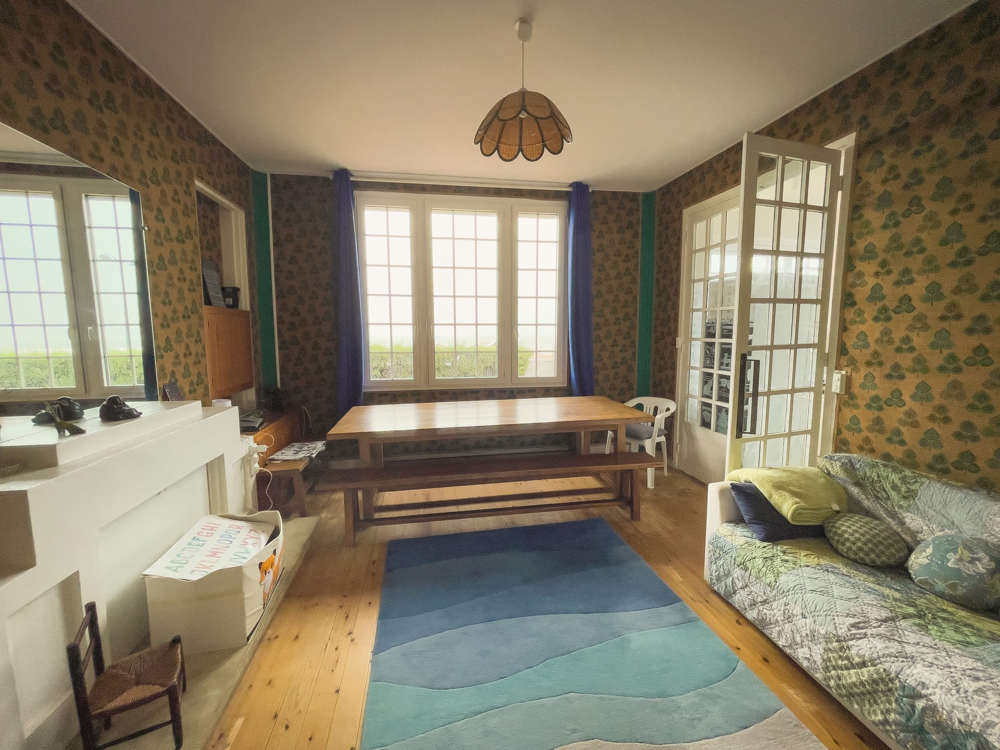
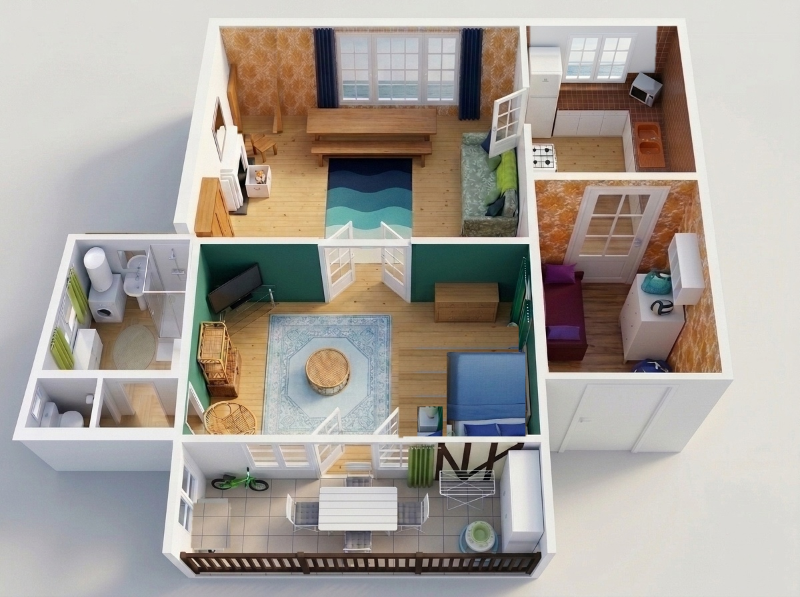
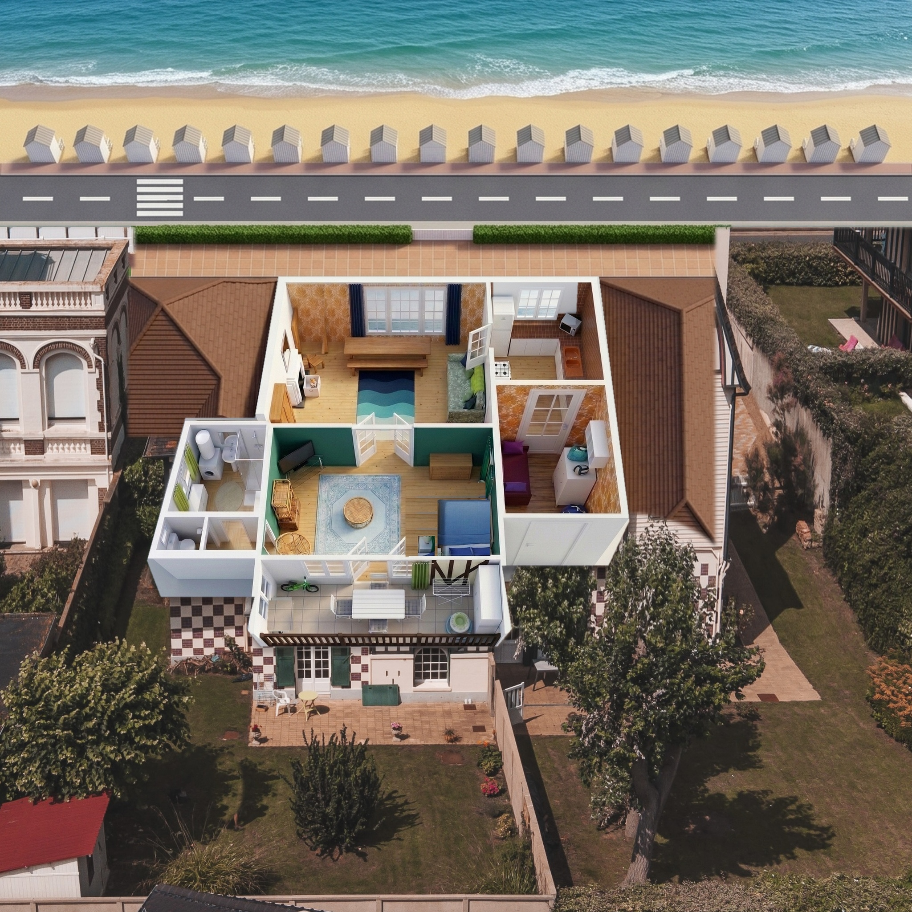

📸 VRAIE PHOTO ORIGINALE DE L'APPARTEMENT

🎨 VISUEL 3D PHOTORÉALISTE VALIDÉ
🧭 1. Plan 3D Appartement (Clique ①-⑦)
③ Salon

🏖️🏡 2. Site Complet : Plage, Immeuble & Jardin

🖱️ Glisser sur l'image : Regarder autour
🔍 Molette : Zoomer • Flèches ← → : Avancer
🔍 Molette : Zoomer • Flèches ← → : Avancer